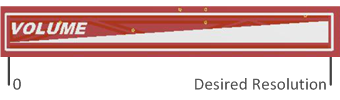

The desired resolution parameter specifies the resolution of the position that is calculated by the slider and wheel processing algorithm. Slider and wheel sensors are one-dimensional sensors that report back a position as their output. When selecting a resolution, the value reported back for the position will be in the range of 0 to resolution-1. For example, if a resolution of 100 is selected, the values will range from 0 to 99 (100 total points of interest).

Implementation Notes
While resolutions up to 16-bit are supported by the algorithm, most realistic use cases involve 8-bit resolution (256 points
of interest along the slider or wheel).
Range of Valid Values for the Desired Resolution Parameter
The desired resolution may be set from 3 to 65535.
Affected Software Parameters
The Desired_Resolution parameter corresponds to the
ui16Resolution
member of the
tSliderSensorParams
and
tWheelSensorParams types in the CapTIvate Touch Library.